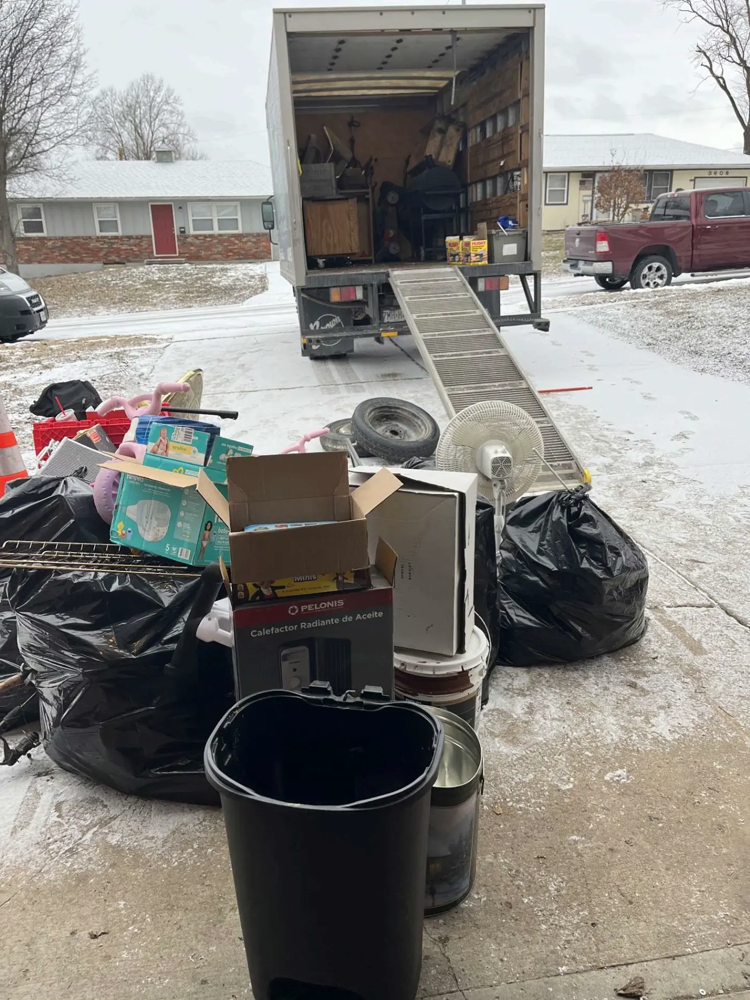
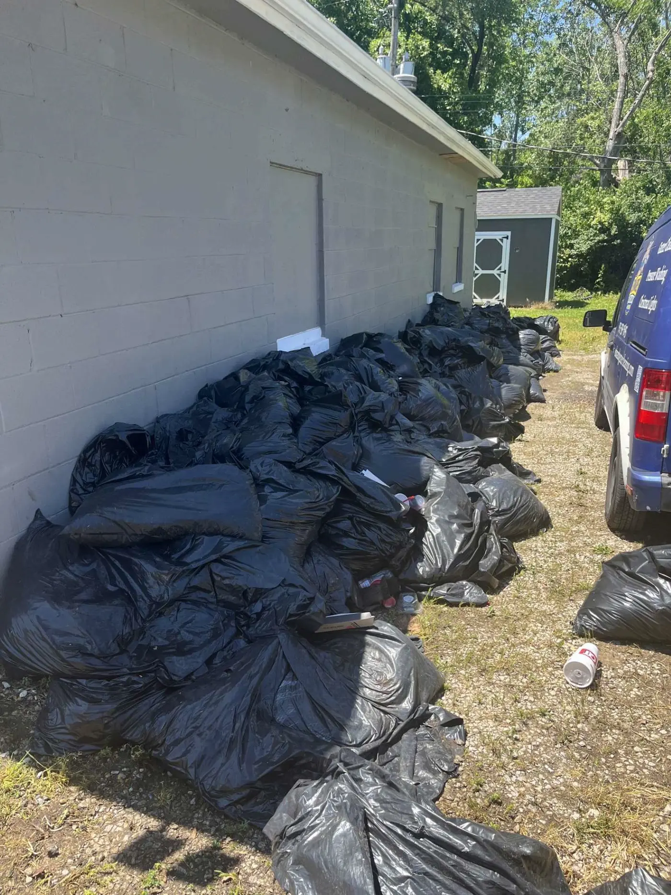

We Haul It All.
Literally.
From single couches to whole-house clean-outs, here's the full list of what The Junk Truck hauls across the Kansas City metro.
Junk Removal
Single items to full-home hauls — furniture, appliances, electronics, you name it.
What's included
- All lifting, loading, and hauling
- Cleanup of the pickup area
- Responsible recycling and donation when possible
- Same-day service when available
Typical jobs: Moving out, downsizing, clearing a basement, replacing furniture.
Request a quote
Bulk Item Removal
Couches, mattresses, fridges, hot tubs — the big stuff municipal trash won't take.
What's included
- Pickup direct from any room — we do the heavy lifting
- Proper disposal of mattresses and appliances
- Freon handling for refrigerators and freezers
- No stairs or doorway charge
Typical jobs: Replacing a mattress or sofa, upgrading appliances, clearing out a workout room.
Request a quote
House Clean-Outs
Whole-home clears for move-outs, foreclosures, rentals, or downsizing.
What's included
- Room-by-room clearing from top to bottom
- Sorting items for donation, recycling, or disposal
- Sweeping up after the job is done
- Discreet, respectful service
Typical jobs: Prepping a house for sale, post-move-out, landlord turnover, hoarding recovery.
Request a quote
Apartment Clean-Outs
Fast, clean move-out hauls that meet your landlord's deadline.
What's included
- Stair and elevator-friendly crews
- Protection for floors, walls, and trim
- Complete unit clearing in a single visit
- Fast turnaround for deadline-sensitive jobs
Typical jobs: Breaking a lease, moving cross-country, evictions, new tenant turnover.
Request a quote
Garage Clean-Outs
Reclaim your garage — old tools, bikes, paint cans, broken furniture, you name it.
What's included
- Full-garage sweep, floor to rafters
- Hazardous item disposal guidance (paint, chemicals)
- Metals, scrap, and electronics handled separately
- Floor-swept clean when we're done
Typical jobs: Making room for a car, selling a home, spring cleaning, post-project cleanup.
Request a quote
Construction Clean-Ups
Post-remodel, demo, and punch-list debris cleared so your crew can close out.
What's included
- Drywall, lumber, flooring, and general debris
- On-site bins available for bigger projects
- Coordination with your GC or project manager
- Jobsite left broom-clean
Typical jobs: End of a remodel, demo-day debris, roofing tear-offs, flooring replacements.
Request a quote
Yard Waste Removal
Branches, brush, bagged leaves, old mulch, dirt piles — gone.
What's included
- Branches, brush, and tree limbs up to a truckload
- Bagged leaves, grass, and sod
- Old mulch, dirt, and landscape rock
- Curbside or back-yard pickup — your call
Typical jobs: Post-storm cleanup, tree trimming, landscape renovation, seasonal yard prep.
Request a quote
Estate Sale Clean-Outs
Respectful, discreet clears after an estate sale or loss. We handle it so you don't have to.
What's included
- Compassionate, no-pressure service
- Sorting items for donation vs. disposal
- Coordination with realtors and estate attorneys
- Everything hauled in one visit when possible
Typical jobs: Post-estate-sale leftovers, downsizing a parent's home, probate clean-outs.
Request a quote
HOA Bulk Item Days
Scheduled neighborhood clean-ups — one truck, one day, no hassle for your board.
What's included
- Fixed-fee, fixed-day community service
- Multiple stops per block in one pass
- Flyers and resident communication support
- Board-friendly reporting after each run
Typical jobs: HOA-scheduled pickup days, neighborhood beautification events, apartment community purges.
Request a quoteNot seeing what you need?
If it fits in the truck, we'll take it. Call us — we say yes a lot.
Ask About a Pickup